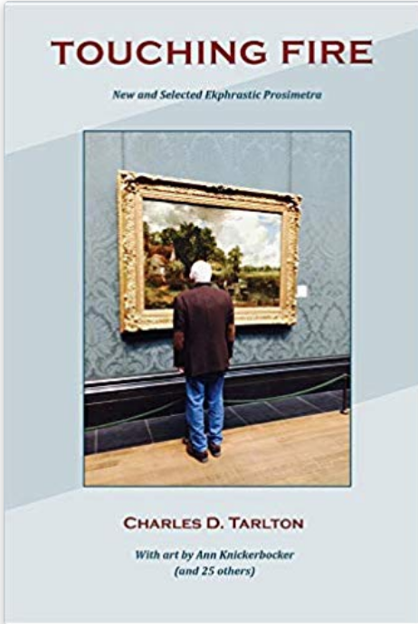

Charles D. Tarlton, Touching Fire: New and Selected Ekphrastic Prosimetra, A Review by Tish Davis
Charles D. Tarlton, Touching Fire: New and Selected Ekphrastic Prosimetra, Bellingham, Washington: KYSO Flash, 2018. $23.00 USD. IBSN 978-0-9980375-0-9. 246 pages, 6" x 9" with 47 full color reproductions of artworks.
Touching Fire, Charles D. Tarlton's second published collection of poetry, is an impressive accomplishment. Inspired by fine art—paintings, photographs, sculpture, and excerpts from poetry—Tarlton’s paper becomes his canvas and his pen, a red sable brush. With long and short strokes varying in weight, color, and texture, he paints ekphrastic tanka prose. Touching Fire contains 56 works by the author, 52 are ekphrastic prosimetra.
Regarding his ekphrastic poems in Touching Fire, Tarlton writes:
. . . the addition of a visual image to the already dual character of the tanka prose brings forward an even more complex poetic experience. Throughout, I have attempted to explore the complicated possibilities in tanka prose and tried to make them serve multiple purposes: historical, literary, critical, as well as artistic.
To facilitate this review, and to showcase the author's understanding and appreciation of the level of difficulty required when executing successful ekphrastic prosimetra, I will occasionally refer to his essay, originally published in Issue 23 of Atlas Poetica, "Notes for a Theory of Tanka Prose: Ekphrasis and Abstract Art."
I will also occasionally quote an excerpt from the author's tanka prose or share a few tanka from one of the works in the book, but out of respect for the poet's fine work presented in Touching Fire and the fact that the art is part of the experience and not reprinted here, I dare not over-share and risk spoiling the effect for the reader.
The poetic experience presented to the reader is based on images from 27 artists. The works in the book are grouped into four Parts. Part I opens with a reproduction of Leonardo da Vinci's A Deluge followed by an epigraph from the book of Genesis (Chapter 9, Verse 13) and concludes with a reproduction of Albrecht Durer's Dream Vision: Traumgesicht.
That these apocalyptic visuals are bookends for Part I by no means indicates the selections in between are dark. However, there is a common motif in the selected works to forces beyond one's control. In Winslow Homer's Rowing Home, for example, there is the potential for disaster. A dwelling is already burning in James Abbott McNeill Whistler's A Fire at Pomfret. One can view Auguste Renoir's Bal du Moulin de la Galette or Suzanne Valadon's The Bath and conclude there's the potential for moral decline. Conversely, one can read the epigraph by Willem de Kooning, the visual for Tarlton's tanka prose "Sneaking into the Atelier," and surmise that in the creative process, a force beyond one's control can have a positive outcome.
Ekphrasis is weakened by writing in which the painting under view is allowed to fade or even disappear in favor of expressions of the poet's desire and feeling.
For this reviewer, the author's response to Winslow Homer's Rowing Home, elicited an immediate ekphrastic encounter. Tarlton's tanka prose retells a story of "two middle-aged professors in a twelve-foot wooden sailboat on the open sea." His friend had "dreamed of doing this since he was a boy,” the poet writes. While one will never know the number of stylistic options Tarlton considered or the count of his drafts, the fact that the "viewer poet" included himself in the sailboat and named his friend, personalized the story for me. The skill presented in Tarlton's response demonstrates not only writing of high quality, but that the author remains true to his tenet of never allowing the painting under view to fade. Even now as I recall the poet's tanka prose, I "see" Rowing Home—the potential power of the open sea, the immense disproportion of sea and sky against the two indistinguishable male figures rowing in the dramatic golds and reds of a shifting canvas as the sun is about to go down.
Tarlton's "Sneaking into the Atelier,'' based on an epigraph from a talk delivered by Willem de Kooning, "What Abstract Art Means to Me," is a must read in my view. The poet's response to the epigraph is in three parts: each a single paragraph of prose followed by two tanka.
These three movements carry the reader into an abandoned studio, presumably belonging to a deceased friend or relative, and into the author's solitude as he rummages through the artist's "forgotten canvases." The prose continues as the author contemplates the stylistic creation of one of the paintings he was drawn to further examine, one that was "all red—red-on-red, dark red, pink, black red, yellow red, a pale milky red wash making it glow. "
The subsequent two sections further build not only on the author's reaction to this "found" red painting but also reconnect the reader to the Willem de Kooning epigraph which contemplates, in the context of abstract art, how that which was not painted becomes a focus for the viewer because of what was painted.
The poet's use of epigraphs directly below the selected artwork is a technique frequently utilized as a gateway from visual art to the tanka prose. The tanka prose presented in the book's Part II are often more complex, due in part to the media utilized for the artistic composition and the subject of the work. Part II includes sculpture; black and white photographs; an orotone glass plate negative; gouache and pencil on Japan paper in addition to oil on canvas works.
Tarlton's skillful incorporation of a variety of references within the body of his tanka prose results in additional textural "voices" for the reader. They add depth without overtaking the featured art.
For example, in Part II:
• The author incorporates lines from other poems or publications:
o In Edmonia Lewis: The Death of Cleopatra, the poet quotes a few lines from Robert Lowell's poem "For the Union Dead."
o In "Peaches and Roses, New Mexico Territory, 1863" based on Edward S. Curtis' 1904 Canyon de Chelly—Navajo, the poet includes:
• 2 epigraphs
•
3 excerpts:
- One from the Geneva Conventions
- A diary entry from Captain Eben Everett's "A Diary of Kit Carson's Navaho Campaign, 1863-64"
- An excerpt from a letter from Professor T.D.A. Cockerell in which Prof. E.O. Wooton describes
"a remarkable new rose from southern New Mexico. . ."
In Part III, the focus is "Abstract Art" and the media and Tarlton's stylistic approach varies.
In response to Ann Knickerbocker's Dappled, an abstract work (acrylic, housepaint, and pencil on wood), the poet inserts brackets around a visualization of what might have been the artist's actual physical acts and motions during the birth of this piece. Those steps are then interspersed in a repartee between an "ekphrastic docent" and the poet himself as they view the painting. That the artist is also the poet's wife is never revealed. This omission was also effective and left me smiling behind the scenes.
Brief one sentence exchanges between Tarlton's fictional characters Carmody and Blight open each section of “Diebebkorn: Three Ekphrastic Moments." These moments include “Preface,” Ocean Park #116 (1979), and Ocean Park #118 (1980). The prose in each of these three works consists of single sentences or fragments. The tanka, two in the first and third works, and three in Ocean Park # 116, are “divided up” and presented as one, two, or three-line segments in between the short passages of prose. The author comments on this technique in his essay, "Thoughts on Tanka Prose," at the beginning of the book:
The elements of the tanka when they are separated often reach, then, both forward and backward to pick up color and implication from the different prose sections.
Now, please allow me to present the “Preface” portion of this selection:
CARMODY: The painter spoke long before; he's over and done with.
BLIGHT: Would he mind, do you suppose, if I tried to lure the music out?
the eye remembers
till it looks away, the details
unfixed, nameless, small
I can see the presence there, the viewer's dark silhouette and the brightly colored painting;
where the yellow bar, lying
across the top weights down
the distance thick with looking, the canvas, wholly muted, strains against the air;
a man’s afraid to look
away and tries to pound at least
the blue into his dreams
if he could walk in, go right through the surface of blue and yellow paint, he'd find it.
the air is tense, leaden
the moment justly frozen
This technique [divided tanka] has certainly lured the music out. I can't think of a better way to engage the reader and at the same time, keep these remarkable art works in view.
Part IV's focus is upon the paintings by John Constable. This section opens with a photo of the author totally immersed in a Constable hanging in the museum.
Stylistically, there’s more self-reflection and thoughts revealed in the tanka prose in Part IV. Consider, for example, the tanka below that follows the opening prose in "John Constable and Me."
an old man leans in
closer to see the painted
wagon in the stream
becomes part of the picture
he's seeing through a window
The tanka prose portion of Part IV closes with John Constable's Cornfield and the author's ekphrastic response "Constable's Black and White Dog." It was interesting to me that the author would comment, in the “Author’s Preface,” on the numerous times the black and white sheep dog appears in Constable landscapes. Tarlton even includes his own tally and lists the names of those paintings in his footnotes.
However, the dog, I would learn, from Tarlton’s three sections of prose, each followed by three tanka, has a special role. His focus redirects our gaze:
. . .The viewpoint of the dog is added to the imagined view of the painter and the captive view of the museum-goer. Located usually somewhere between foreground and middle ground of the picture, the dog (what does the dog see?) provides an alternative, shifting, and enviable view, a view from which we imagine seeing the scene differently.
The fine works in Touching Fire also provide readers with alternative, shifting and enviable views as the poet harnesses the power of tanka prose, delighting the reader with ekphrastic experiences while at the same time keeping the selected art in view.
|